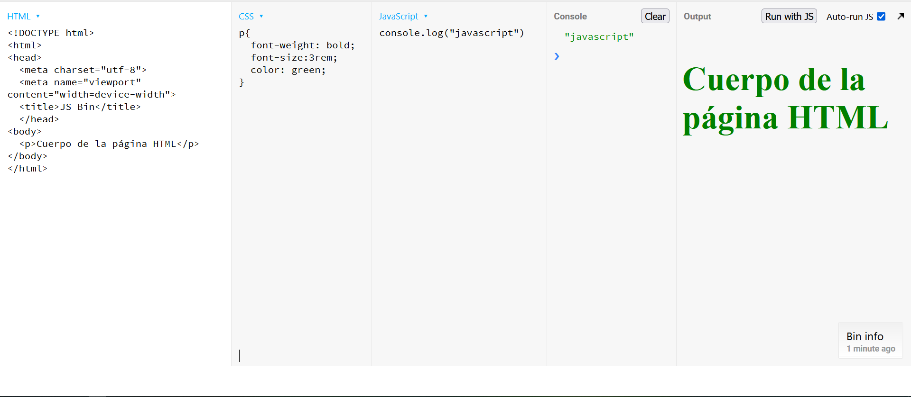

Configurar el Entorno de trabajo para Javascript
La idea principal de este artículo es mostrar como se debe configurar el espacio de trabajo para poder generar código con javascript.
2. Editor de Código
Un editor de código es una herramienta de software diseñada específicamente para escribir y editar código fuente de programas informáticos. Los editores de código proporcionan un entorno optimizado para los desarrolladores, ofreciendo características que facilitan la escritura, lectura y organización del código. Se utilizan principalmente para el desarrollo de software, desde aplicaciones web y móviles hasta sistemas complejos.
Características Principales de un Editor de Código
- Resaltado de Sintaxis: Muestra el código en diferentes colores y estilos según la sintaxis del lenguaje, lo que facilita la lectura y comprensión.
- Autocompletado: Sugerencias automáticas mientras se escribe, que ahorran tiempo y reducen errores tipográficos.
- IntelliSense: Proporciona sugerencias inteligentes basadas en el contexto del código, incluyendo nombres de variables, funciones y parámetros.
- Depuración: Herramientas integradas para ejecutar y probar el código, permitiendo establecer puntos de interrupción, inspeccionar variables y seguir el flujo del programa.
- Integración con Control de Versiones: Soporte para sistemas de control de versiones como Git, que permite realizar commits, ver diferencias y gestionar ramas directamente desde el editor.
- Terminal Integrado: Un terminal embebido que permite ejecutar comandos sin salir del editor.
- Extensiones y Plugins: Posibilidad de añadir funcionalidades adicionales mediante extensiones o plugins desarrollados por la comunidad o terceros.
- Multilenguaje: Soporte para múltiples lenguajes de programación, facilitando el trabajo en proyectos que usan más de un lenguaje.
Ejemplos de Editores de Código Populares
- Visual Studio Code (VS Code): Este es editor de código más popular, para windows es recomendable descargar el System Installer por ser la mejor opción.
- Sublime Text 4: Sigue siendo un editor de código relevante y eficaz en el panorama actual del desarrollo de software, también dispone de una versión portable.
- WebStorm: Este editor sigue siendo uno de los entornos de desarrollo integrados (IDE) más avanzados y populares para el desarrollo en JavaScript, TypeScript y tecnologías relacionadas. Desarrollado por JetBrains, WebStorm es altamente valorado por su conjunto de características avanzadas, rendimiento robusto y capacidad para mejorar la productividad del desarrollador. Ese IDE tiene un costo de US $69.00 el primer año, sin embargo tiene una licencia gratuita para estudiantes.
- Brackets: Este editor fue desarrollado por Adobe, pero en el 2021 lo abandona y se convierte en un proyecto de código abierto bajo la licencia MIT.
- Notepad++
- Github Atom
- Vim
Visual Studio Code
Temas
- Material Icon Theme: Esta extensión reemplaza los iconos predeterminados de VSC con iconos que son más distintivos y visualmente atractivos, lo que facilita la identificación rápida de los tipos de archivos y carpetas en tu proyecto.
- Drácula Official: Un tema oscuro con colores vibrantes y alto contraste que es fácil para los ojos durante largas sesiones de codificación.
- Material Theme: Inspirado en Material Design de Google, este tema ofrece una apariencia limpia y moderna con colores atractivos y una paleta bien equilibrada.
- One Dark Pro: Basado en el tema por defecto de Atom, este tema oscuro es popular por su estilo elegante y su legibilidad.
- Monokai: Un tema clásico que ha sido popular durante mucho tiempo, conocido por su combinación distintiva de colores brillantes y oscuros.
- Night Owl: Diseñado para minimizar la fatiga visual, este tema oscuro ofrece colores suaves y contrastes cuidadosamente ajustados.
- Cobalt2 Theme Official: Desarrollado por el diseñador Wes Bos, este tema tiene colores llamativos y un estilo moderno y limpio.
- City Lights Theme: Con un diseño minimalista y una paleta de colores suaves, este tema es popular entre aquellos que prefieren un aspecto discreto pero elegante.
- Tokyo Night Theme: Inspirado en la vida nocturna de Tokio, este tema oscuro presenta colores atrevidos y vibrantes que se destacan en la oscuridad.
- GitHub Theme: Basado en los colores utilizados en GitHub, este tema es simple y limpio, ideal para aquellos que desean una experiencia de codificación familiar.
- Nord Theme: Con una combinación de tonos fríos y cálidos, este tema ofrece un aspecto único y atractivo que es popular entre muchos usuarios de VSC.
Extensiones
- ESLint: Ayuda a identificar y corregir errores de estilo y sintaxis en tu código JavaScript, siguiendo las reglas definidas en el archivo de configuración ESLint.
- Prettier: Formatea automáticamente el código JavaScript según las reglas predefinidas, lo que ayuda a mantener un estilo de código consistente en todo el proyecto.
- Debugger for Chrome: Permite depurar código JavaScript directamente desde Visual Studio Code utilizando el navegador Google Chrome como backend de depuración.
- npm: Proporciona soporte para trabajar con el gestor de paquetes npm dentro de VSC, lo que facilita la instalación, actualización y eliminación de dependencias en el proyecto.
- Path Intellisense: Proporciona autocompletado de rutas de archivos y directorios en tu código JavaScript, lo que facilita la navegación dentro del proyecto.
- Code Runner: Permite ejecutar rápidamente porciones de código JavaScript seleccionadas o el archivo completo desde Visual Studio Code, sin necesidad de salir del editor.
- JavaScript (ES6) code snippets: Ofrece una colección de snippets (fragmentos de código) para JavaScript ES6, lo que acelera la escritura de código al proporcionar atajos para estructuras de código comunes.
- Live Server: Permite iniciar un servidor web local para proyectos de desarrollo en JavaScript y proporciona actualizaciones en tiempo real del navegador mientras se realizan cambios en el código.
- Bracket Pair Colorizer: Colorea los pares de corchetes y paréntesis en tu código JavaScript para facilitar la identificación de bloques de código anidados.
- GitLens: Ofrece una integración avanzada con Git dentro de Visual Studio Code, lo que permite ver información detallada sobre los cambios, autores y líneas de código modificadas en el repositorio Git.
3. Node.js
Node.js es un entorno de ejecución para JavaScript en el lado del servidor. Se puede ejecutar JavaScript directamente desde la línea de comandos.
Ventajas
- Alta Performance y Escalabilidad:
- Event-Driven, Non-Blocking I/O: Node.js utiliza un modelo de entrada/salida no bloqueante y basado en eventos, lo que permite manejar múltiples conexiones simultáneamente de manera eficiente.
- V8 Engine: Está construido sobre el motor V8 de Google, que compila JavaScript a código máquina nativo, proporcionando un rendimiento muy rápido.
- JavaScript en el Lado del Servidor:
- Un Lenguaje en Ambos Lados: Permite a los desarrolladores usar el mismo lenguaje tanto en el cliente como en el servidor, simplificando el desarrollo y la transferencia de conocimientos.
- JSON Nativo: La integración nativa con JSON facilita el intercambio de datos entre el cliente y el servidor.
- Gran Ecosistema de Paquetes: NPM es uno de los mayores ecosistemas de bibliotecas y herramientas de código abierto en el mundo, permitiendo a los desarrolladores encontrar soluciones para casi cualquier problema.
- Desarrollo Rápido y Prototipado:
- Frameworks y Herramientas: La existencia de frameworks como Express.js facilita la creación rápida de aplicaciones web robustas y escalables.
- Community Support: Una gran comunidad activa que contribuye con módulos, herramientas y soporte.
- Microservicios y Aplicaciones en Tiempo Real:
- Socket.IO: Permite la creación de aplicaciones en tiempo real como chats y juegos en línea con facilidad.
- Microservices Architecture: Facilita la creación de arquitecturas de microservicios, mejorando la escalabilidad y mantenimiento del código.
Desventajas
- Modelo de un Solo Hilo:
- Bloqueo del Event Loop: Si una operación es intensiva en CPU, puede bloquear el event loop y hacer que la aplicación sea menos adaptable al viewport.
- Concurrency Limitations: No es adecuado para tareas que requieren alta concurrencia y uso intensivo de CPU sin considerar técnicas de procesamiento en segundo plano o usar workers.
- Madurez del Ecosistema:
- Módulos Inmaduros: Aunque npm tiene una gran cantidad de paquetes, algunos pueden ser inmaduros o de baja calidad.
- Cambios Rápidos: El ecosistema evoluciona rápidamente, lo que puede provocar problemas de compatibilidad y requerir actualizaciones frecuentes.
- Callback Hell y Manejo de Errores:
- Callback Hell: El uso extensivo de callbacks puede llevar a un código difícil de mantener y leer. Aunque las promesas y async/await han mitigado este problema, sigue siendo un desafío en algunos casos.
- Manejo de Errores: El manejo de errores asíncronos puede ser complejo y requiere una comprensión clara de las promesas y async/await.
- Compilación de Módulos Nativos: Algunos módulos npm dependen de código nativo que debe ser compilado, lo que puede causar problemas de compatibilidad entre diferentes sistemas operativos.
- Rendimiento Comparativo: Para tareas que requieren mucho procesamiento en la CPU, Node.js puede no ser la mejor opción en comparación con lenguajes como Go o Java.
Como se Utiliza
Para poder utilizar esta forma de ejecución del código, se hace necesario tener instalado nodejs:
- Instalar Node.js: Descargar el instalador de nodejs desde su página principal preferentemente la versión LTS.
- Creación del archivo fuente js: Crear el archivo con extensión
.js, por ejemploapp.js:console.log('Hola desde Node.js'); - Ejecutar el archivo fuente js: Abrir la terminal o el símbolo del sistema, navegar hasta el directorio donde está guardado el archivo
app.jsy ejecutar:node app.js
4. Entornos de Desarrollo Integrados (IDE)
Un IDE como Visual Studio Code, WebStorm, o Sublime Text ofrecen características avanzadas para escribir y ejecutar código JavaScript.
- Visual Studio Code: Tiene una terminal integrada donde se puede ejecutar Node.js directamente. Además, se puede usar extensiones como "Live Server" para ejecutar y ver cambios en archivos HTML/JS en tiempo real o el complemento "Code Runner" para ejecutar el código JavaScript.
- WebStorm: Ofrece herramientas integradas para desarrollo JavaScript, incluyendo un terminal y soporte para Node.js.
5. Playgrounds en Línea
Existen plataformas en línea donde se puede escribir y ejecutar JavaScript sin necesidad de instalar nada en tu PC.
Algunas populares incluyen:
- CodePen: Ideal para prototipos rápidos de HTML, CSS y JavaScript.
- JSFiddle: Similar a CodePen, permite probar código JavaScript junto con HTML y CSS.
- Repl.it: Permite ejecutar código en múltiples lenguajes, incluyendo JavaScript.
- JSBin: También se utiliza para prototipos rápidos de HTML, CSS y JavaScript.
Ejemplo de como se usa JSbin para crear una página web con CSS y código Javascript:

En las columnas tituladas como HTML, CSS Y javascript se escribe el todo el código HTML, CSS y javascript que necesite el proyecto.
En la columna titulada como console se muestra lo que se desplega a consola p. ej. con el console.log.
En la columna titulada como output se muestra lo que sa muestra en pantalla.